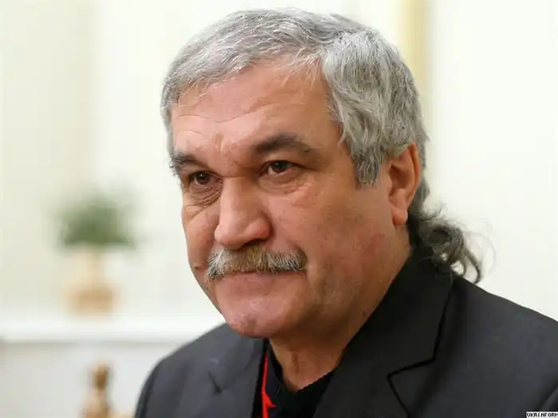
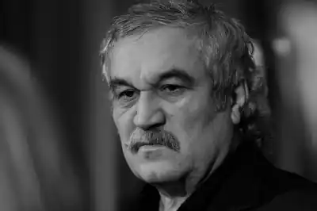
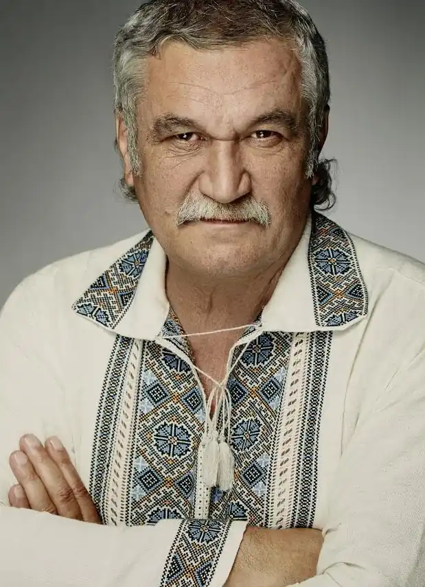
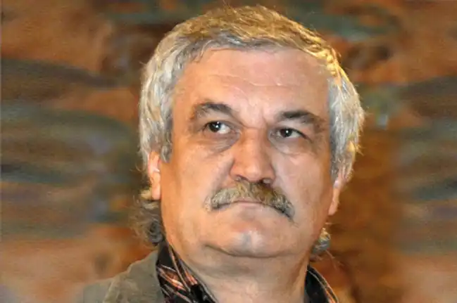
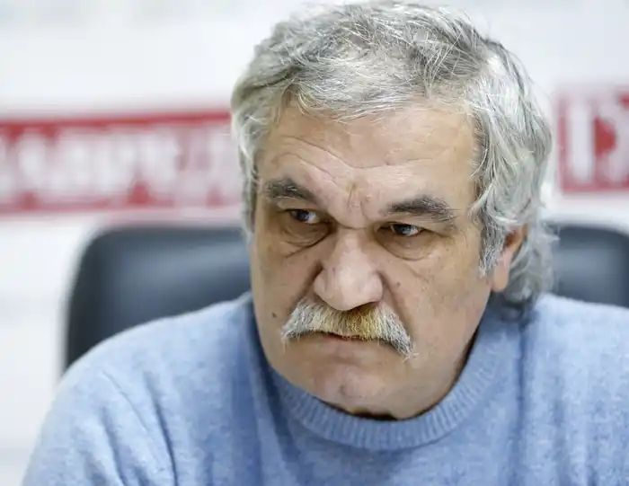

Василь Шкляр народився 10 червня 1951 року під волоським горіхом у Холодному Яру (село Ганжалівка Лисянського району Черкаської області). 1963 року родина переїхала до міста Звенигородка, де 1968-го закінчив середню школу зі срібною медаллю. Того ж року вступив на філологічний факультет Київського університету ім. Т. Г. Шевченка, де завершив навчання 1973-го. Водночас навчався (за обміном студентів) на філологічному факультеті Єреванського державного університету – студіював вірменську мову й літературу.
Після навчання рік працював науковим співробітником Центрального державного історичного архіву. Відтак довший час займався журналістикою, завідував відділом прози в журналах "Ранок" та "Дніпро". На порі становлення нашої незалежності у 90-х роках був прес-секретарем Української республіканської партії. Тривалий час перебував на творчій роботі, обіймав посади головного редактора видавництва "Дніпро" та заступника голови Національної спілки письменників України.
Василь Шкляр – член НСПУ, член Асоціації українських письменників, лауреат багатьох престижних літературних премій, володар гран-прі Всеукраїнських конкурсів на кращий роман "Золотий бабай" та "Коронація слова", лауреат премії "Золоте перо", міжнародної премії "Спіраль століть", австралійської премії "Айстра", премії Ліги українських меценатів "Ярославів Вал" та ін. Улюблена літературна відзнака Шкляра – "Автор, чиїх книжок найбільше викрали з магазинів". 2011 року Комітет з Національної премії імені Тараса Шевченка присудив Василеві Шкляру цю найвищу літературну нагороду за роман "Чорний Ворон" ("Залишенець"), однак письменник відмовився отримувати премію на знак протесту проти перебування на посаді міністра освіти українофоба Табачника. Згодом у Холодному Яру вперше в нашій історії автору "Чорного Ворона" було вручено Народну Шевченківську премію. Грошовий еквівалент нагороди – 260 000 грн. письменник переказав у фонд екранізації роману "Чорний Ворон". Друкувати свої твори почав ще школярем, з 1967 року. Окремими виданнями вийшли книжки прози "Перший сніг" (1976), "Живиця" (1982), "Черешня в житі" (1983), романи "Праліс" (1986), "Ностальгія" (1989), "Ключ" (1999), "Елементал" (2001), "Кров кажана" (2003), "Залишенець" ("Чорний Ворон", 2009) та ін. Сьогодні Василя Шкляра називають батьком українського бестселера. Кожен його роман викликає неабиякий резонанс у суспільстві. Тираж "Чорного Ворона" уже сягнув за 150 тисяч. Культовий роман "Ключ" нещодавно витримав десяте видання. Постійно перевидаються романи "Елементал", "Кров кажана". Письменник володіє вірменською мовою, свого часу активно займався художнім перекладом. Розголосу набула його інтерпретація першого варіанту повісті М. Гоголя "Тарас Бульба", за що "удостоївся" брутальної критики тодішнього російського посла Віктора Черномирдіна. Твори Василя Шкляра також перекладено багатьма мовами, зокрема англійською, болгарською, вірменською, шведською, словацькою, російською та ін. У своїй літературній діяльності письменник принципово жодного разу не скористався спонсорською допомогою, не прийняв жодної державної нагороди.